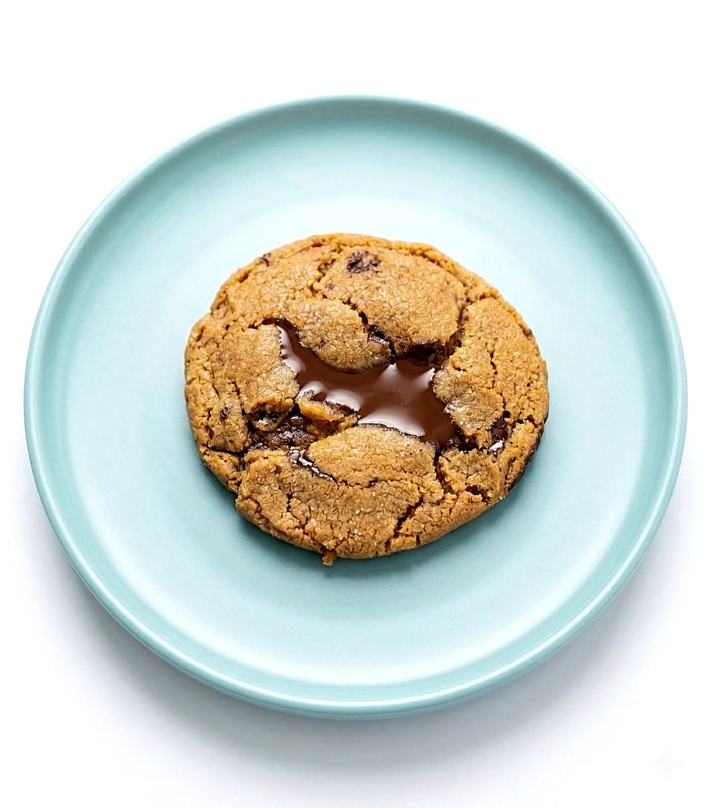

Baking / Chocolate chip cookies
Broma Bakery Chocolate Chip

- Yield
- 14 cookies
- Unit Weight
- 50 g
- Rest
- 10 min at room temperature
- Oven
- 350F, 11-12 min
- Price
- $3.50
- Tags
- vegetarian
- Source
- Broma Bakery, bromabakery.com
Scorecard
4/5Appearance
5/5Texture
4.5/5Flavor
mediumTechnique
4.5/5Overall
Ingredients
Batch
- Butter: 168 g, browned
- Brown sugar, packed: 200 g
- Granulated sugar: 50 g
- Egg: 1, plus 1 extra yolk
- Vanilla extract: 15 ml
- All-purpose flour: 220 g
- Baking soda: 3 g
- Kosher salt: 4 g
- Dark chocolate chunks: 170 g
Method
- Brown the butter in a skillet over medium heat, until it foams and turns deep golden with a nutty smell. Pour into a heatproof bowl.
- Cool 5 to 10 minutes, or it will scramble the eggs.
- Whisk in both sugars, then the egg, yolk and vanilla, until smooth.
- Add flour, baking soda and salt. Fold with a spatula only until no dry flour shows.
- Fold in the chocolate chunks.
- Rest 10 minutes at room temperature, or chill for later.
- Scoop onto parchment with 5 cm between mounds.
- Bake at 350F for 11 to 12 minutes. Pull them with golden edges and centres still soft and puffy.
- Cool on the sheet 5 minutes, salting while warm if wanted, then move to a rack.
Notes
- Brown butter is the whole point of this one.
- Skip salted butter or drop the added kosher salt.
- They keep cooking on the hot pan, so underbake rather than over.
Learnings
Best texture of the ten tested, a 5. Appearance only a 4 and flavor 4.5, which still puts it joint top overall with the Levain copycat at 4.5. Medium effort.